Klik pada salah satu card proyek untuk membaca kisah perjalanan dan detail di baliknya.
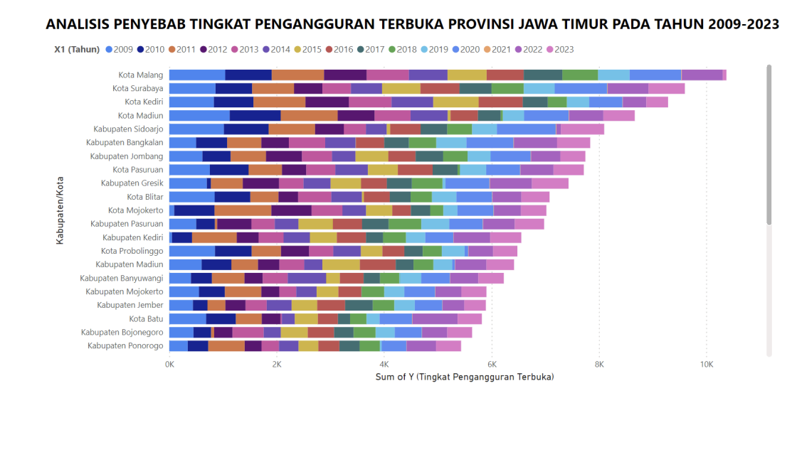
Pembersihan data mendalam dan visualisasi interaktif menggunakan Power BI untuk memetakan faktor penyebab pengangguran di Jawa Timur.
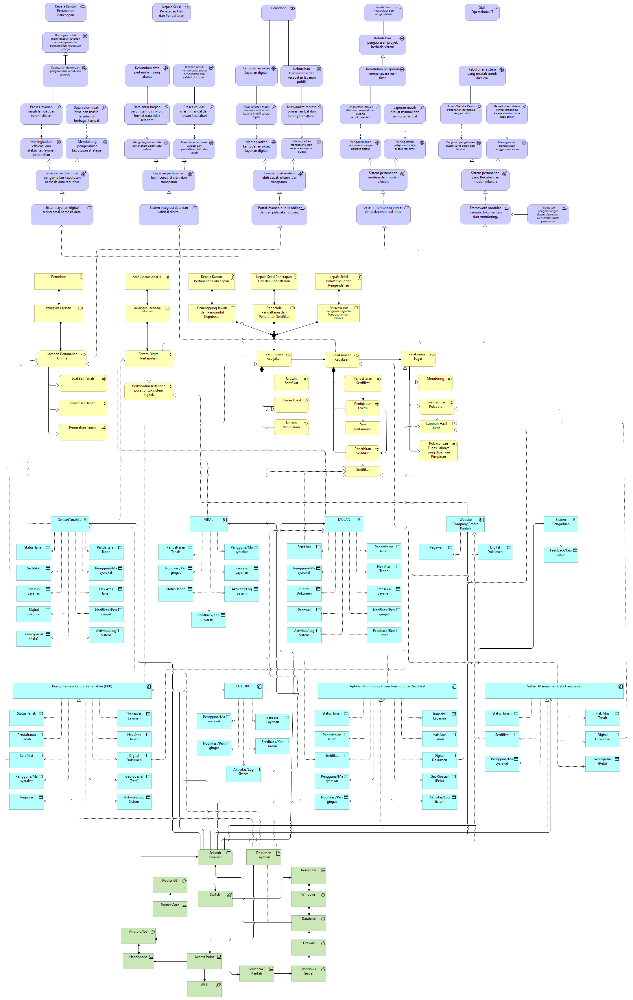
Perancangan cetak biru teknologi informasi menggunakan pemodelan berlapis mulai dari motivation layer, bisnis, hingga aspek pendukung lainnya.
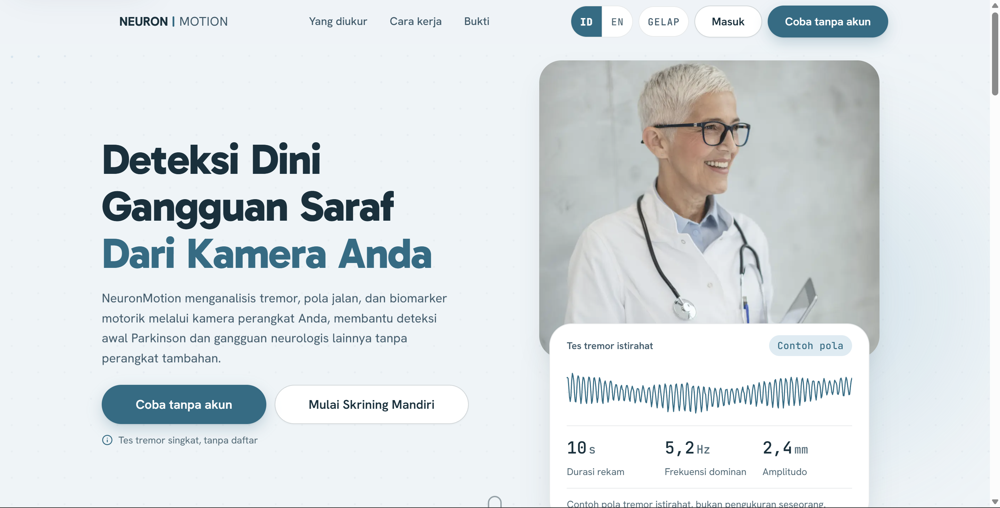
Website inovatif untuk skrining dan deteksi dini gangguan neurologis Parkinson.
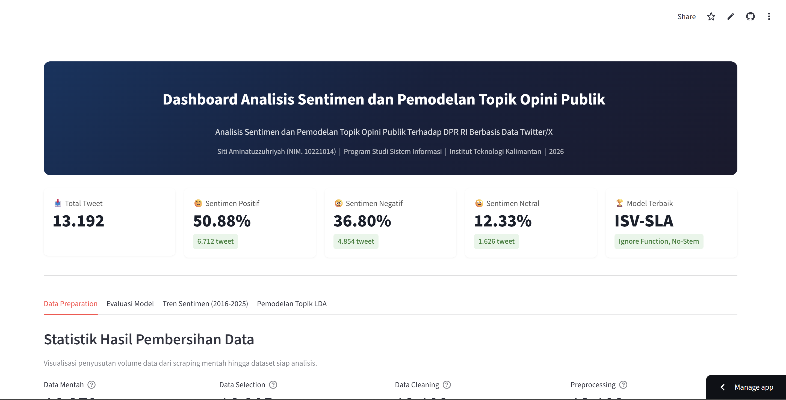
Pemodelan topik LDA dan klasifikasi sentimen Twitter menggunakan metodologi InSet Vader with Runtime Score Normalization.
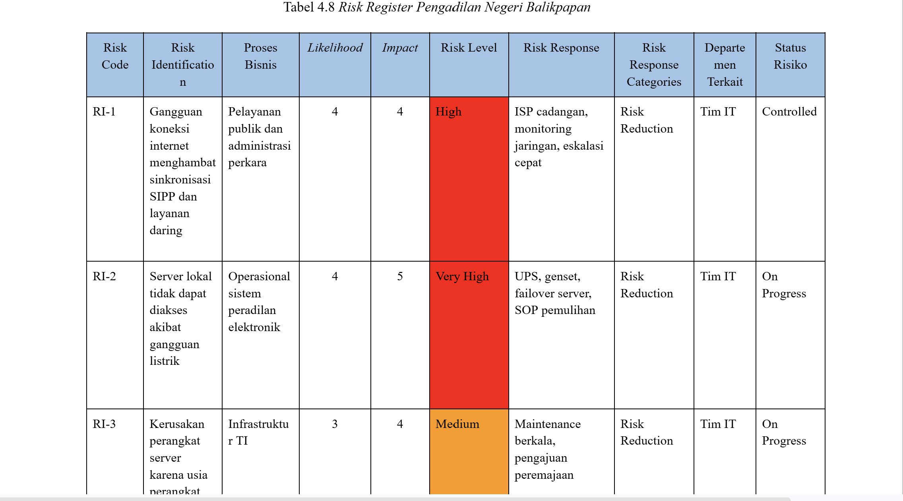
Analisis mendalam dan penyusunan rekomendasi perbaikan untuk mitigasi risiko infrastruktur teknologi informasi pengadilan.
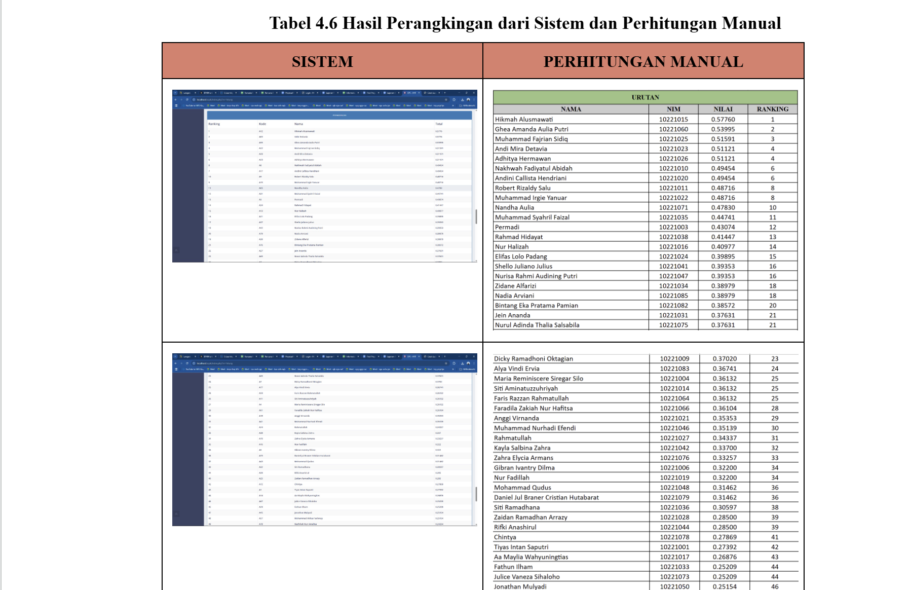
Pengembangan sistem cerdas berbasis kalkulasi multi-variabel untuk menentukan kelayakan mahasiswa penerima beasiswa Bank Indonesia.
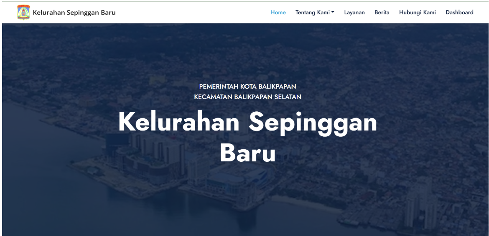
Memimpin tim sebagai Project Manager & Scrum Master dalam menyusun backlog, sprint, dan perencanaan sistem informasi warga.
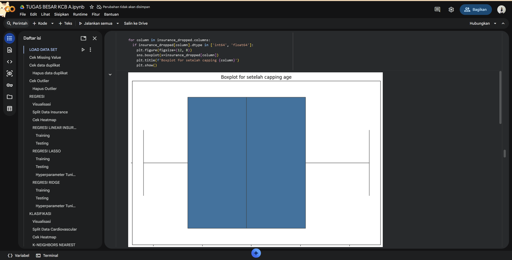
Pengolahan dataset kompleks dan pembuatan visualisasi interaktif menggunakan Python untuk menemukan faktor penentu harga pasar.
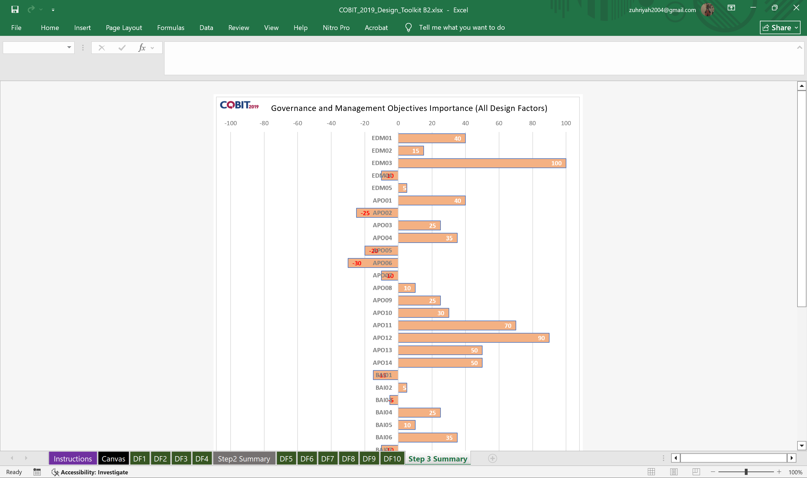
Perancangan evaluasi komprehensif dan manajemen layanan TI untuk meningkatkan efisiensi operasional pengadilan negeri.
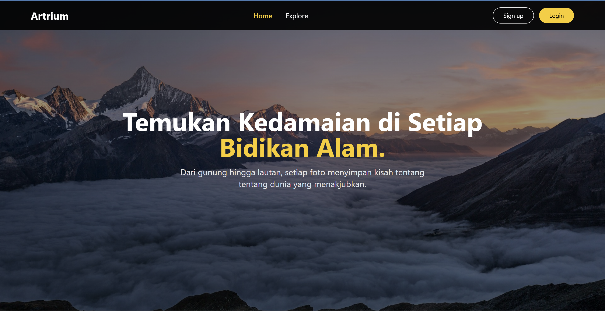
Pembangunan antarmuka responsif dan penetapan fitur utama perangkat lunak untuk wadah pameran karya visual.
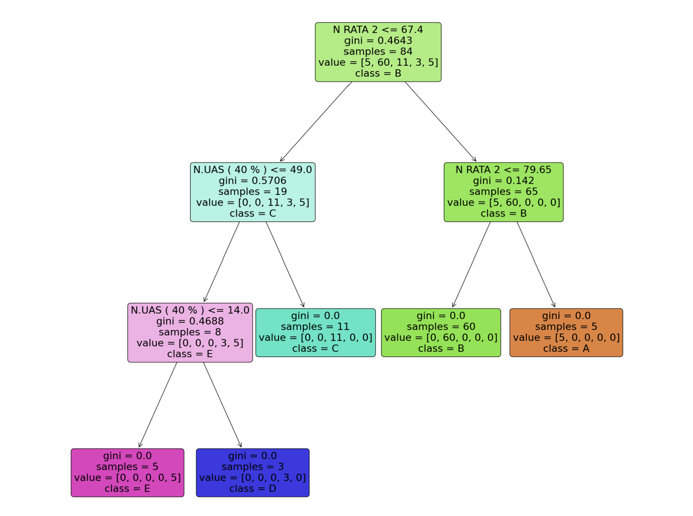
Penerapan metode Decision Tree untuk menganalisis pola kelulusan dan performa akademis mahasiswa.
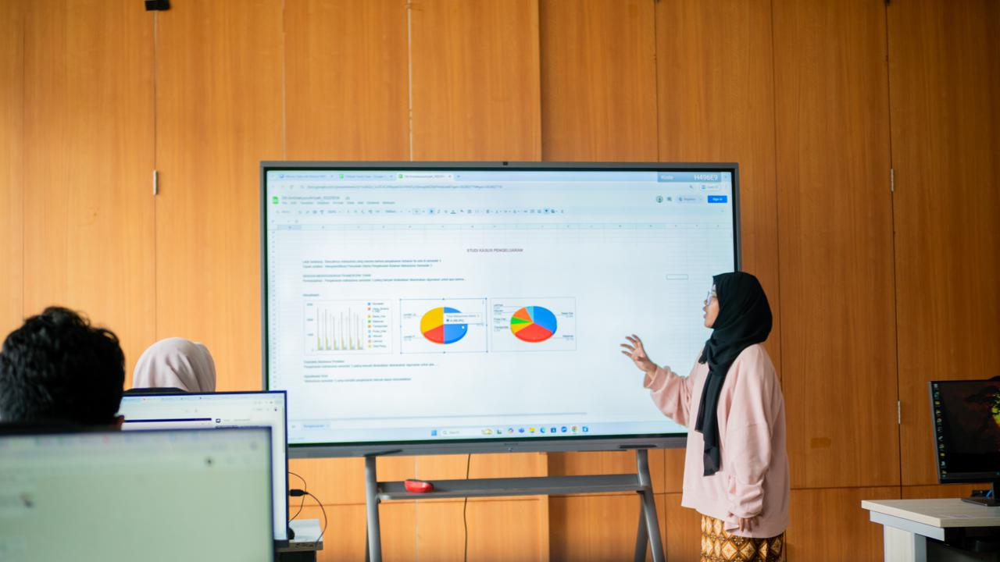
Visualisasi data riil pengeluaran di setiap semester, mengungkap puncak pengeluaran tertinggi pada semester 3.
Proyek ini berangkat dari kebutuhan mendesak untuk memetakan dan memahami akar permasalahan sosio-demografis yang memicu angka pengangguran terbuka di wilayah Jawa Timur secara komprehensif. Melalui eksplorasi data yang mendalam, proses pengerjaan dimulai dari pembersihan struktur data (data cleaning) tingkat lanjut hingga transformasi variabel agar siap dianalisis. Dari pengolahan tersebut, terciptalah sebuah dasbor analitik interaktif berbasis Power BI yang menyajikan tren, perbandingan antar wilayah, serta indikator-indikator utama pengangguran secara visual. Kehadiran karya ini memberikan dampak nyata berupa kemudahan bagi para pemangku kepentingan dan pengambil kebijakan untuk membaca dinamika data dengan cepat, sehingga strategi penanggulangan pengangguran dapat dirumuskan secara jauh lebih tepat sasaran.
Perancangan cetak biru (IT blueprint) ini diinisiasi dengan maksud untuk menyelaraskan arah perkembangan teknologi informasi dengan visi strategis serta kebutuhan operasional jangka panjang organisasi. Proses perancangannya melibatkan pemodelan enterprise secara berlapis, mulai dari motivation layer, pemetaan alur proses bisnis inti, hingga spesifikasi infrastruktur teknologi pendukung yang terintegrasi. Output dari proyek ini berupa dokumen perancangan arsitektur enterprise lengkap dengan diagram relasi sistem yang utuh. Dampak dari penerapan kerangka ini mampu menyelamatkan organisasi dari investasi teknologi yang tumpang tindih, sekaligus menghadirkan peta jalan digital yang jelas untuk mendongkrak efisiensi operasional.
Neuro Motion dikembangkan sebagai wujud kepedulian terhadap pentingnya deteksi dini gangguan neurologis, khususnya penyakit Parkinson, melalui pendekatan teknologi yang mudah diakses masyarakat luas. Proses pengembangannya mencakup perancangan antarmuka pengguna (UI/UX) yang ramah pasien, penyusunan alur tes skrining mandiri yang intuitif, hingga implementasi kode web yang responsif. Karya ini berwujud platform aplikasi web fungsional yang sukses mengantarkan tim meraih Juara 2 dalam ajang kompetisi desain web nasional CITECH. Efek dari proyek ini tidak hanya menorehkan prestasi membanggakan, tetapi juga memberikan sarana edukasi dan asesmen awal yang memudahkan masyarakat mengenali gejala kesehatan saraf sebelum berkonsultasi langsung ke tenaga medis.
Penelitian ini dilatarbelakangi oleh keinginan untuk membaca dan memahami dinamika opini publik secara objektif melalui percakapan digital di platform X (Twitter) terkait kinerja Dewan Perwakilan Rakyat Republik Indonesia (DPR RI). Proses riset ini melibatkan tahapan pengumpulan data (scraping), pembersihan teks (preprocessing), penerapan metodologi tingkat lanjut InSet Vader with Runtime Score Normalization (ISV-RSN) untuk klasifikasi sentimen, serta pemodelan topik menggunakan Latent Dirichlet Allocation (LDA). Output dari karya ini berupa skrip kode pemrosesan data, model analitik, serta naskah skripsi penelitian yang utuh. Dampak yang dihasilkan adalah tersedianya sudut pandang objektif berbasis data kuantitatif mengenai tren dan ragam persepsi masyarakat terhadap lembaga legislatif.
Proyek ini dirancang untuk mengidentifikasi, menganalisis, serta mengevaluasi potensi celah kerentanan pada infrastruktur teknologi informasi yang menopang operasional di lingkungan Pengadilan Negeri Balikpapan. Pengerjaannya dilakukan melalui peninjauan mendalam terhadap alur sistem yang berjalan, penilaian tingkat risiko (risk assessment), serta perumusan strategi mitigasi yang selaras dengan standar tata kelola. Hasil akhir berupa dokumen analisis risiko komprehensif lengkap dengan matriks penanganan dan rekomendasi langkah perbaikan. Proyek ini memberikan dampak krusial dalam meminimalkan potensi gangguan sistem peradilan digital serta menjaga keamanan dan kerahasiaan data lembaga peradilan.
Maksud dari pengembangan sistem ini adalah menghadirkan mekanisme pendukung keputusan yang adil, transparan, dan terkomputerisasi dalam menyeleksi calon mahasiswa penerima beasiswa Bank Indonesia. Proses pembuatannya mengimplementasikan algoritma perhitungan multi-kriteria untuk memproses berbagai indikator akademik maupun kondisi ekonomi pelamar secara akurat. Output yang dihasilkan berupa aplikasi perangkat lunak berbasis web yang siap diaplikasikan langsung dalam proses seleksi internal. Dampak nyata dari sistem ini adalah mempercepat proses seleksi secara objektif, akuntabel, serta meminimalisir unsur subjektivitas dalam penilaian.
Proyek ini bertujuan untuk merancang dan memimpin pengembangan Sistem Informasi Manajemen yang mempermudah proses administrasi dan pelayanan warga di tingkat kelurahan. Berperan langsung sebagai Project Manager dan Scrum Master, proses pengerjaan mencakup penyusunan product backlog, manajemen siklus sprint, hingga koordinasi pembagian tugas pengembangan tim secara agile. Output karya ini berupa dokumen manajemen proyek yang terstruktur rapi beserta purwarupa sistem informasi warga. Dampak dari kepemimpinan proyek ini berhasil meningkatkan efisiensi kolaborasi tim pengembang sekaligus menghadirkan cetak biru solusi digital yang aplikatif bagi kebutuhan publik kelurahan.
Eksplorasi data ini dilakukan untuk mengupas faktor-faktor penentu utama yang paling memengaruhi fluktuasi harga jual kendaraan bermotor bekas di pasaran. Proses pengolahannya menggunakan bahasa Python, dimulai dari pembersihan dataset multivariat yang kompleks, analisis statistik deskriptif, hingga pemetaan korelasi antar variabel. Output proyek ini berupa skrip analisis data beserta grafik visualisasi interaktif yang mengungkap pola pasar otomotif. Dampak yang diberikan adalah tersedianya wawasan prediktif yang membantu konsumen maupun pelaku industri dalam menetapkan estimasi nilai wajar kendaraan secara rasional.
Proyek evaluasi ini dikerjakan dengan tujuan untuk mengukur sejauh mana efektivitas tata kelola dan manajemen layanan teknologi informasi di instansi peradilan berdasarkan kerangka kerja standar. Pengerjaannya melibatkan audit kapabilitas proses yang sedang berjalan, analisis kesenjangan (gap analysis), dan perumusan rekomendasi strategis peningkatan layanan. Output proyek ini berupa laporan komprehensif penataan tata kelola TI untuk mendukung ekosistem peradilan modern. Dampaknya mampu mendorong instansi untuk mengoptimalkan layanan digital secara aman, terukur, dan berstandar tata kelola institusional yang baik.
Proyek ini dibuat untuk membangun sebuah platform web portofolio visual yang bersih, estetis, dan interaktif khusus sebagai wadah pameran karya fotografi pribadi. Proses pengembangannya berfokus pada perancangan antarmuka yang responsif, optimalisasi tata letak galeri gambar, serta kenyamanan pengalaman visual di berbagai ukuran layar perangkat. Output karya ini berupa website portofolio yang fungsional dengan performa muat halaman yang cepat. Dampaknya, platform ini berhasil menjadi ruang digital profesional yang elegan untuk memamerkan karya visual kepada publik maupun calon klien.
Penelitian kuantitatif ini bertujuan untuk menganalisis pola kelulusan serta memetakan faktor-faktor penentu keberhasilan performa akademis mahasiswa Universitas Muhammadiyah Prof. Dr. Hamka (UHAMKA) melalui pendekatan Machine Learning. Proses pengerjaannya meliputi pengolahan data historis akademik, seleksi atribut penting, hingga penerapan algoritma klasifikasi Decision Tree untuk menemukan aturan keputusan performa studi. Output dari proyek ini berupa model pohon keputusan beserta laporan analisis tingkat akurasi prediktif. Dampak positifnya adalah membantu pihak institusi pendidikan dalam mendeteksi dini potensi kendala akademik mahasiswa sehingga langkah bimbingan preventif dapat segera diambil.
Proyek data storytelling ini lahir dari catatan riil pengeluaran personal di setiap semester perkuliahan guna merangkai narasi finansial yang bermakna. Proses pengerjaannya melibatkan pengumpulan data keuangan harian, pengelompokan pengeluaran per semester, visualisasi grafik, hingga menemukan temuan menarik, di mana terungkap bahwa puncak pengeluaran tertinggi justru terjadi pada semester 3. Output karya ini menyajikan visualisasi data yang dikemas bersama narasi cerita analitis yang interaktif. Dampaknya memberikan kesadaran finansial yang mendalam, membantu mengevaluasi pos-pos pengeluaran masa lalu, serta menjadi landasan dalam merencanakan manajemen keuangan kuliah yang lebih bijak ke depannya.